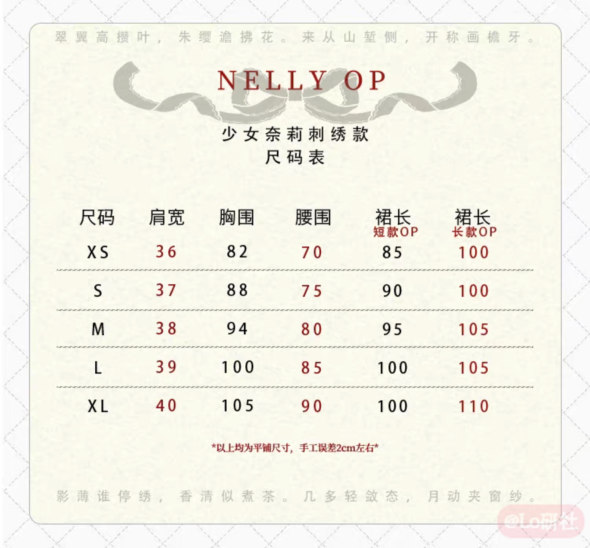

零售页评价／批次与独立性未核
当前可见评价中有作者肯定柔软、舒适及细节；另一条较早公开评价形容面料偏厚重且暖。评价未统一袖长/裙长及体型，不能推成夏季适用结论。
查看对应来源 ↗少女奈莉SP刺绣OP对照；长/短袖、长/短裙四组合，区别于2026年2.0
中文款名与原图表已补
补草莓巫女/少女奈莉SP中文对应、原图长短表及新笔记的适用限制。
“有记录”表示取得对应资料，不等于原店现行批次或实物已全部确认；日期：2026-10-25。
| 核查项 | 状态 | 结果与适用范围 |
|---|---|---|
| 款式与版本 | 有记录 | 少女奈莉SP刺绣OP/NELLY与Nerry已对照，区别于2026年2.0。T08 ↗ O11 ↗ |
| 商品与店铺入口 | 部分有据 | 中文店名、品牌账号及聚合入口已补；原店商品ID仍未核。O11 ↗ T10 ↗ |
| 价格与包含物 | 部分有据 | 海外58.99美元含OP+两蝴蝶结；268元仅图鉴/聚合未选SKU参考。R05 ↗ T08 ↗ T10 ↗ |
| 面料与里料 | 部分有据 | 图鉴与零售的提花棉陈述相符；百分比/克重/现行洗标未知。T08 ↗ R05 ↗ |
| 厘米尺码 | 有记录 | 原图XS–XL分长短两表；2XL仅见零售，尺码出现不等于可选。T08 ↗ R05 ↗ |
| 销售与交期 | 部分有据 | 7–10天为海外处理期，非到货承诺；2.0品牌公告不代替旧SP状态。R05 ↗ O11 ↗ |
| 穿着反馈 | 部分有据 | 海外反馈有案；新小红书仅笼统评价，未证明SP/实购/体型。R05 ↗ XL1 ↗ |
对应资料 · T08 ↗ 核读：2026-10-25
图鉴具名转载资料；与海外零售页对照，仍未取得原店当前SP商品页。
| 尺码 | 肩宽 | 胸围 | 腰围 | 短款裙长 | 长款裙长 |
|---|---|---|---|---|---|
| XS | 36 | 82 | 70 | 85 | 100 |
| S | 37 | 88 | 75 | 90 | 100 |
| M | 38 | 94 | 80 | 95 | 105 |
| L | 39 | 100 | 85 | 100 | 105 |
| XL | 40 | 105 | 90 | 100 | 110 |
原图标注平铺、手工误差约2厘米；2XL仅见零售商表，XS仅在图表不保证可选。

42Lolita · Nerry ↗
零售页品牌标注：Strawberry Witch · 读取日期：2026-10-25
本条以公开零售页为采样入口，尚未核原店当前商品ID、授权关系和洗标。图鉴与用户自述分别保留；零售规格不等于原店同批次确认，美元报价不折算为淘宝价。
本候选直接以零售页Nerry OP为研究对象；英文品牌与款名按该页记录，未用近似中文名认定原店。
材质陈述：零售页写Cotton jacquard（棉提花）、里料cotton；未核原店成分百分比、洗标与克重。
包含物与分售：页面报价为一件OP加两个蝴蝶结；不同袖长、裙长及配色分别选。头饰、包鞋和裙撑不自动包含。
| 尺码 | 肩宽 | 胸围 | 腰围 | 长款裙长 |
|---|---|---|---|---|
| XS | 36 | 82 | 70 | 100 |
| S | 37 | 88 | 75 | 100 |
| M | 38 | 94 | 80 | 105 |
| L | 39 | 100 | 85 | 105 |
| XL | 40 | 105 | 90 | 110 |
| 2XL | 41 | 110 | 95 | 110 |
此主表为长款、单位厘米；短款另表见下。XS仅在尺码表出现，当前主选项未见XS，不代表可售。原页称平铺测量可能有2–3厘米误差。
| 尺码 | 肩宽 | 胸围 | 腰围 | 短款裙长 |
|---|---|---|---|---|
| XS | 36 | 82 | 70 | 85 |
| S | 37 | 88 | 75 | 90 |
| M | 38 | 94 | 80 | 95 |
| L | 39 | 100 | 85 | 100 |
| XL | 40 | 105 | 90 | 100 |
| 2XL | 41 | 110 | 95 | 100 |
S / light green long-sleeved long dress：USD 58.99；零售SKU LOL-DRE-201214。
页面处理时间写7–10天（不含周末/假日），不是国际运输总时长，也未逐项核所有版本库存。
该报价仅属于上述海外零售页和所选组合，未核结算运费、税费与实付；不折算成淘宝价，也不替代下方原店交期。
未取得原店选定SKU人民币价格；海外报价仅见独立零售页记录，未核运费、税费和结算实付。
尚无与此研究目标对应的官方SKU报价。
当前可见评价中有作者肯定柔软、舒适及细节；另一条较早公开评价形容面料偏厚重且暖。评价未统一袖长/裙长及体型，不能推成夏季适用结论。
查看对应来源 ↗新增小红书正文仅笼统称实惠、适合日常；没有版本、尺码、体型或实购证据，4条已加载评论为dd，不能补成SP同版性能或独立口碑。
查看对应来源 ↗正文与可见评论已读；未观看的视频不写成视频结论。版本、配色、体型、渠道和推广关系未全部统一。
把长短袖、长短裙和面料厚重感分开比较，先确认测量口径与穿着季节，再讨论纯色刺绣是否适合更日常的场景。
这是后续验证问题，不代表已确定的产品定位、定价或质量结论。